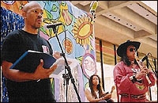

Frank Out Loud: readings, workshops, lectures, special events
If you are interested in bringing Frank to your institution or event, send him an email.
Read what people say about Frank's readings and lectures.
Right: Frank, Nikky Finney, and Cochise Anderson at the La Casita Festival (Lincoln Center Out of Doors Series) in New York, August 2003.
FEBRUARY 2011
2/2-2/5 Panel & Reading, AWP, Washington, DC
2/9 Reading, Lunch & Learn on Main, UK Alumni Office, Louisville
2/10 Reading/Talk, S.T. Roach Community Conversation, Lyric Theater, Lexington, KY, 5:30 pm
2/12 Creative Writing Workshops, YMCA Arts & Culture Day, Lexington, KY
2/12 Reading with Affrilachian Poets, Sigma Valentine Dance, Lexington, Tates Creek Country Club
2/22 Reading, Hopkinsville Community College, Hopkinsville, KY, Noon
2/22 Reading, Western Kentucky University, Bowling Green, KY, 5:30 pm
2/23 Reading, Sewanee University of the South, Sewanee, TN
2/26 Reading and Workshop, Bluegrass Community & Technical College Conference, Lexington, KY
2/28 Gear UP conference workshop, Louisville, KY
MARCH 2011
3/1 Keynote, Gear Up Conference, Louisville, KY
3/4 Workshops, Professional Development, Gheens Academy, Louisville, KY
3/9-3/10 Reading with Affrilachian Poet Founders, Symposium on Affrilachia, Lexington, KY
3/16-3/17 Reading and Writing Workshops, Spalding University
APRIL 2011
4/1 Reading, Greenbriar Resort, Boyscouts Retreat, Charleston, WV
4/2 Reading and Workshop, Dayton Literary Fest, University of Dayton, Dayton, OH
4/4-4/6 Reading and Workshop, Western Carolina University, Cullowhee, NC
4/8-4/12 Reading and Workshop, NWRSC, Fort Walton Beach, FL
4/15 Reading/Workshops, Tates Creek High School, Lexington, KY
4/20 Writing Workshops, Madison Central High School, Richmond, KY
4/22 Harlem to Hip Hop Lecture, Taft High School, Cincinnati, OH
4/24 Reading, First Unitarian Church, Cincinnati, OH